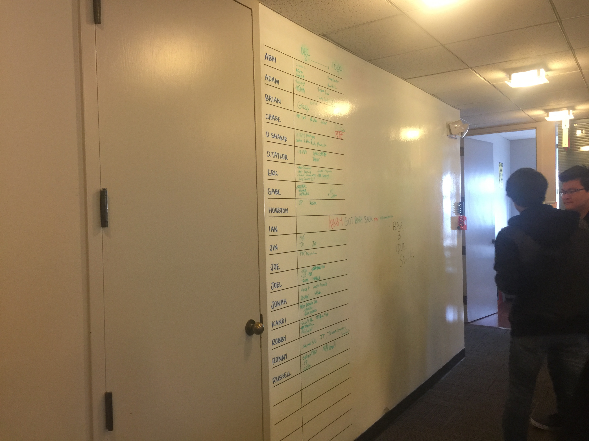
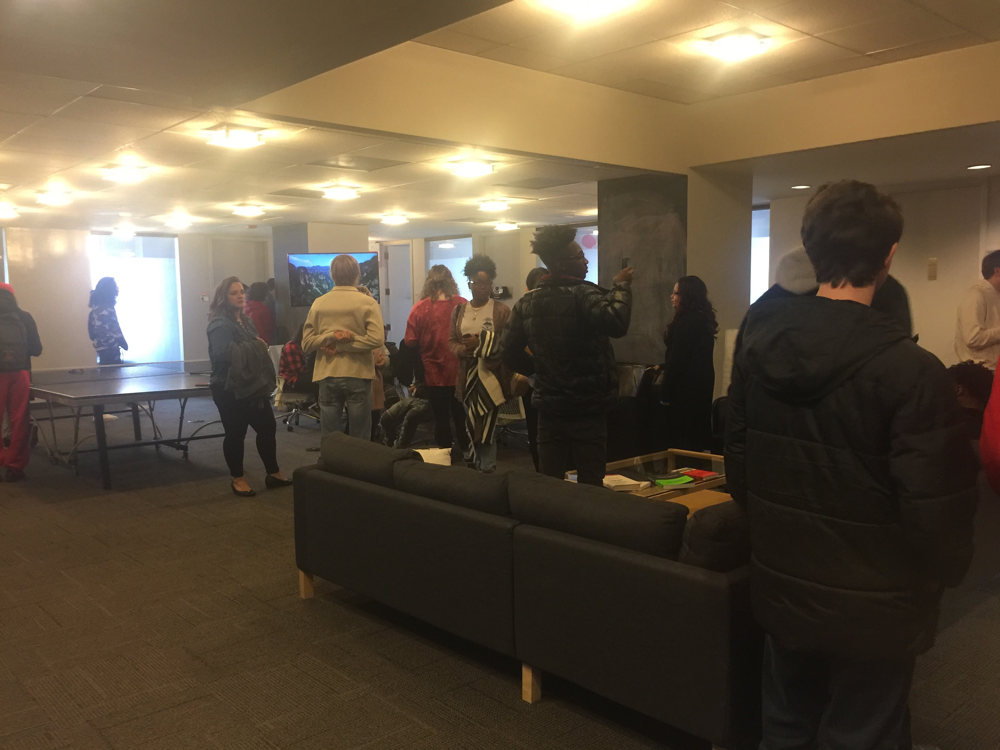
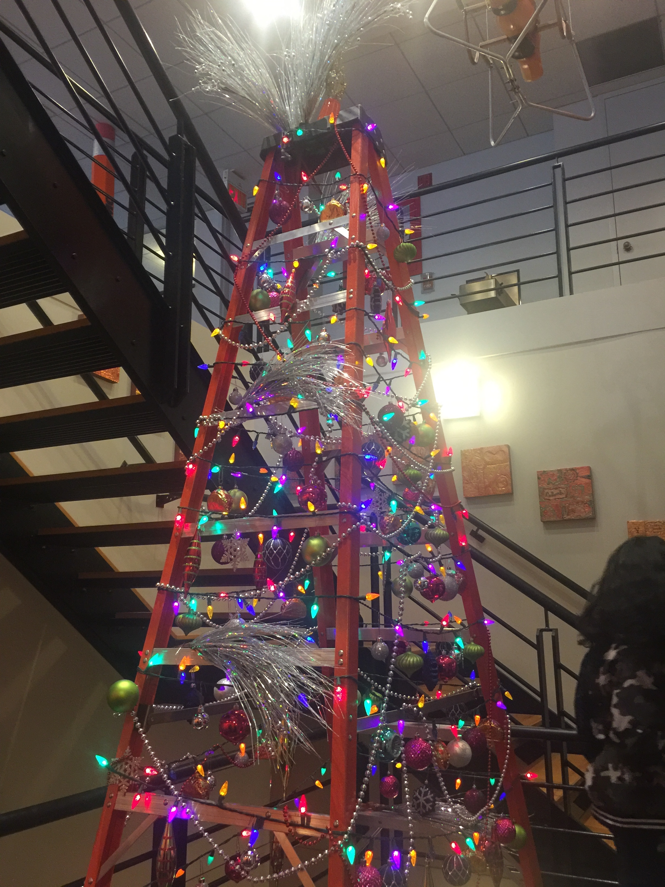
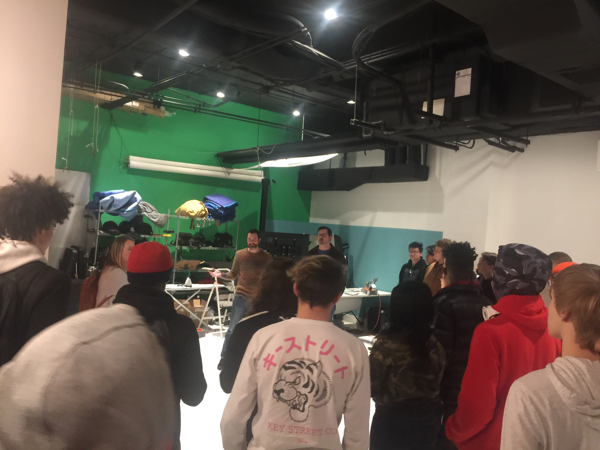

If you ever have been to the City of Memphis, have you found the Cotton Museum? If you have ever managed to find the building at Front Street and Union Avenue, have you noticed golden plates that have the words "Archer Malmo" inscribed on them? It may not seem like it, but the Cotton Museum's neighbor contains an unforgettable experience you may never forget. So what is Archer Malmo? It may be an advertising company, but the work done covers a range of several subjects, including Website coding! The Lobby at the entrance was really cool, as it seemed very appropriately decorated for Christmas! From there, we all took the elevator to our next destination. Even Mrs. Wetzel went with us, much to my surprise!
Fun Fact! On the way, we walked by a cool restaurant where Mrs. Sinclair actually designed their logo!
According to Mr. Gabe, the person who spoke to us, Archer Malmo has a branch of web design that focuses and works on the main website. Although Archer Malmo is an advertising company, it has a lot to do with the focus of HTML and CSS, which appears to be very cool. The Main website has all sorts of info, such as the News section, the About section, and all sorts of information to go by. This company may really be huge after all.
Archer Malmo never has any real competitors though, despite being a big company. What the employees do to contribute, however, might sound like you're dreaming, even though you're not. The employees all have different roles, from studio designing, to even traveling to different places to take pictures.
This is the picture of the board here, where all the employees are listed with their current jobs, and some with where they are!

In the Lobby Room, we got to sit on the couches, and there was even a Ping Pong table where I got to play at with some of my classmates! Even though I only did for a short time, that was sure an amazing moment. In the room, there was a projector screen where we saw Mr. Gabe demonstrate some of the website! There was art all around the room, among them a Pixel Robot Rockstar. What was also amazing was that from the 2F lobby room, you could And although you probably couldn't see it without going into the closest office, I actually heard a train go on the nearby track. I wonder what I might have seen if I was allowed to get closer? Cinders and Ashes!

After the lecture, the entire class sat on the couch with each other as we all had our group picture taken Courtesy of Mrs. Sinclair! Mr. Cooper didn't take any picture of us on the couch, or in a group, but I think he may have really enjoyed the group picture.
Shortly after, we all took the stairs to the next floor. On the way, I found something quite amazing, which was a cooly decorated ladder with several different colored lights. Mr. Cooper was very generous to take a picture so you can see for yourself! Thank you Mr. Cooper!
Well, what are you waiting for? Hover over the image to see a special surprise!

On the next floor, Mr. Gabe warned us to keep a good volume just in case the employees were currently filming a commercial. He kindly explained to us that people that worked at the company not only filmed commercials, but manage situations involving marketing and production. That must have sounded really cool.
The next elevator we took went to an even lower floor. Beyond the elevator doors was a slightly-narrow hallway that led to our next destination-a filming studio. We met Mr. Michael, who gave us a verbal tour around the room. As we gave ears to the next lecture, he also showed us these cool poseable sticks that were used for filming purposes, among them cool stop motion videos! I may not remember what they're called, but I think they were really awesome, too!
Fun Fact! These were actually invented in Memphis! In 2018 (the year I went), this is their 60th anniversary!

After exiting the studio, we took the stairs to the main lobby once again, where we said our goodbyes and thanked him for the cool tour! We went to the bus again, but instead of going back to school directly, we went to have lunch in a local restaurant named . There, we filled our stomachs with good food and good memories until it was time to go home at 1 AM. I think I had a really amazing, thrilling, exciting, and memoriable trip to Archer Malmo! The Next time you go to Memphis, at least try to go visit the building if you can. Just remember where the Cotton Museum is!
For even more information about Archer Malmo, you can
Visit Their Website!